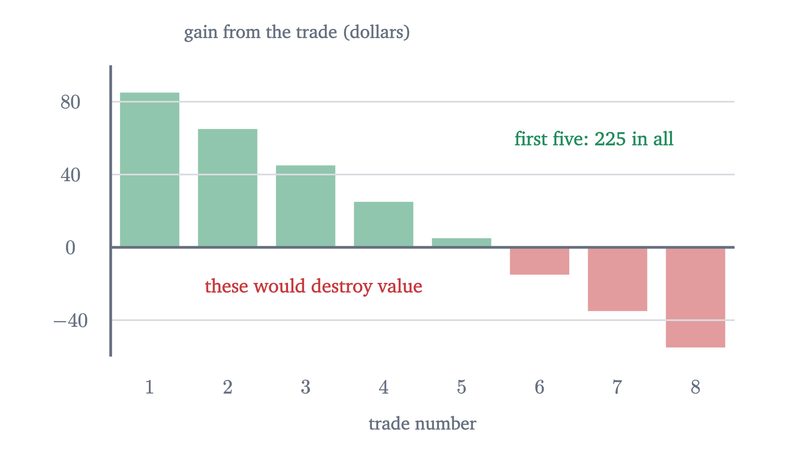
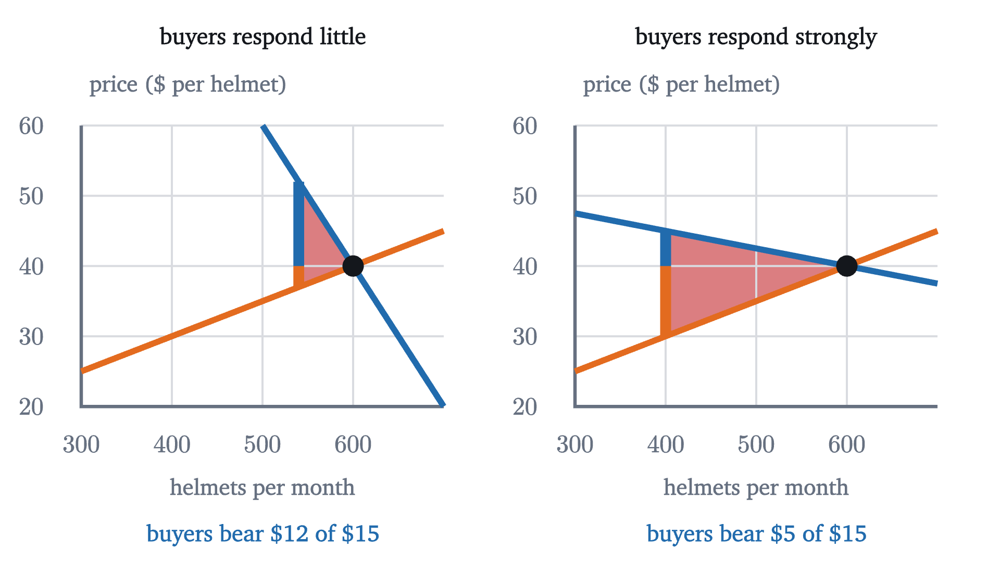

Consumer surplus, and what a tax destroys
Measure what a market is worth to its buyers and sellers, then tax it. Some of the loss reaches nobody, and who bears the rest depends on slopes, not the law.
AssumesSupply and demand: where a price comes fromThinking at the margin: marginal cost and revenue
A city puts a tax of $15 on every bicycle helmet sold. It collects $7,500 a month. Add up what the tax costs the people in the market and, in the example worked out below, the answer is $8,250 a month: $5,500 from buyers and $2,750 from sellers. So $750 a month left the buyers and sellers and did not arrive at the treasury. Where did it go?
There is a second puzzle in the same numbers. The law makes sellers hand over the tax, yet buyers bear two thirds of it. Both puzzles need a way to measure what a market is worth to the people who trade in it. That measure is built person by person first, in a market small enough to list.
What a trade is worth to each person
Take the used-textbook market from the lesson on supply and demand. Eight students each want one copy of a calculus book, and the most they would pay is $95, $85, $75, $65, $55, $45, $35 and $25. Call them, in that order, Ben, Fay, Dev, Hoa, Ana, Gus, Cho and Eli. Eight owners each have a copy, and the least they would accept is $10, $20, $30, $40, $50, $60, $70 and $80. Everyone takes the going price as given. At any price from $50 to $55 the five buyers with the highest willingness to pay want to buy and the five owners with the lowest costs want to sell, so five copies trade. Say the price is $52.
Ben would have paid $95 and pays $52. He ends up as well off as if he had paid his limit and then been handed $43. The owner with a cost of $10 would have sold for $10 and receives $52: she is $42 ahead.
| Buyer would pay | 95 | 85 | 75 | 65 | 55 | Sum |
|---|---|---|---|---|---|---|
| Consumer surplus at $52 | 43 | 33 | 23 | 13 | 3 | 115 |
| Seller’s cost | 10 | 20 | 30 | 40 | 50 | |
| Producer surplus at $52 | 42 | 32 | 22 | 12 | 2 | 110 |
Total surplus is $115 + 110 = 225$ dollars.
Pause and try
Any price from $50 to $55 clears this market. Recompute the two surpluses at $54. What changed, and what did not?
Show answerHide answer
Each of the five buyers pays $2 more, so consumer surplus falls by 10, to 105. Each of the five sellers receives $2 more, so producer surplus rises by 10, to 120. The total is still 225. The price moves surplus between the two sides and cannot change the sum, because every dollar a buyer pays is a dollar a seller receives.
Since the payments cancel, total surplus can be written without the price: it is the sum of the traded buyers’ values minus the sum of the traded sellers’ costs, here $(95 + 85 + 75 + 65 + 55) - (10 + 20 + 30 + 40 + 50) = 225$. Pair the buyers and sellers in order and this is $85 + 65 + 45 + 25 + 5$, the gain created by each trade.
Could a different arrangement create more?
Suppose a planner who knew everyone’s numbers could decide who gets a book and who gives one up, ignoring prices altogether. Could she beat 225?

An allocation that makes total surplus as large as possible is called efficient. The theorem says that a competitive market, with no planner and with each person consulting only her own number and the price, reaches the efficient allocation. This is a result about the model, and it leans on the model’s assumptions. Traders take the price as given. Each person’s number captures everything she gains or gives up. And nobody outside the trade is affected by it: no smoke, no noise, no risk to others. Where a trade harms a bystander, the sum $W$ leaves out a cost and the conclusion can fail.
The theorem also says less than it may seem to. Efficiency counts dollars and is blind to who gets them. Eli, who could pay only $25, gets no book in the efficient allocation, and a dollar of surplus counts the same in a rich hand as in a poor one. Whether an efficient outcome is a fair one is a separate question.
Surplus as an area
Now take a market big enough for smooth curves: bicycle helmets in a city. Read the demand curve by quantity. The buyer of the $Q$-th helmet would pay up to $P_d(Q) = 100 - \frac{Q}{10}$ dollars, and the $Q$-th helmet costs $P_s(Q) = 10 + \frac{Q}{20}$ dollars to supply; that is its marginal cost. The market clears where the two agree:
In the book market each buyer’s surplus was a bar one unit wide, reaching from the price up to her willingness to pay. With 600 buyers the bars are too thin to see and together they fill the region between the demand curve and the price line. That region is a triangle with base 600 and height $100 - 40 = 60$, so consumer surplus is $\frac12 \times 600 \times 60 = 18000$ dollars a month. Producer surplus is the triangle between the price line and the supply curve: $\frac12 \times 600 \times (40 - 10) = 9000$ dollars a month. (For curved demand the same area is an integral; for straight lines, triangles are enough.)
A tax drives a wedge
Go back to the eight students for a moment and tax their market: for every book sold, $30 must be handed to the student union.
Pause and try
With a $30 tax, the buyer’s payment exceeds what the seller keeps by $30. Which of the five trades, with gains of 85, 65, 45, 25 and 5 dollars, can still leave both parties better off? How much does the union collect, and how much total surplus is left, counting the union’s revenue?
Show answerHide answer
A trade can survive only if its gain exceeds $30, since otherwise no pair of prices $30 apart suits both sides. That leaves the first three. For instance buyers pay $68 and sellers keep $38: exactly three buyers would pay $68 or more and exactly three sellers accept $38 or less. Buyers’ surplus is $27 + 17 + 7 = 51$, sellers’ is $28 + 18 + 8 = 54$, and the union collects $3 \times 30 = 90$. The total is 195, which is 30 less than before.
The missing $30 is $25 + 5$, the gains from the fourth and fifth trades. Hoa would pay $65 and the fourth owner would sell for $40. Without the tax they trade and share $25. With it, she would need to pay at least $70 for the owner to keep $40, so they do not trade. Hoa does not get the $25, the owner does not get it, and the union does not get it either, because a trade that does not happen pays no tax.
The helmet market tells the same story with areas.
That answers the first puzzle. Of the $8,250 that buyers and sellers lose, $7,500 is transferred to the government, which can spend it, and $750 is the surplus of trades that stopped happening.
Who bears the tax
The second puzzle was about who pays. Compare prices before and after: buyers paid $40 and now pay $50; sellers kept $40 and now keep $35. Of the $15, buyers bear $10 and sellers $5. How the burden is actually divided is called the incidence of the tax. We never said who hands the money to the city, and the example never needed to know.
For the helmets $b = \frac{1}{10}$ and $d = \frac{1}{20}$, so the buyers’ share is $\frac{b}{b+d} = \frac{2}{3}$, which is $10 of the $15, and the deadweight loss is $\frac{225}{0.3} = 750$.
Part 2 says the side whose curve is steeper bears more. A steep demand curve means buyers hardly change their quantity when the price moves; in the language of the elasticity lesson, their demand is less elastic at the market point. Buyers who will not walk away can be charged, and the tax lands on them.

In the limit of a vertical demand curve, where buyers take the same quantity at any price, the formulas give $\frac{b}{b+d} \to 1$ and $\frac{t^2}{2(b+d)} \to 0$: buyers bear all of the tax and there is no deadweight loss, because no trade is prevented.
One more consequence of part 3 deserves a prediction.
Pause and try
The city doubles the helmet tax to $30. Before calculating, guess what happens to the revenue and to the deadweight loss. Then compute both.
Show answerHide answer
$Q_{30} = 600 - \frac{30}{0.15} = 400$, so revenue is $30 \times 400 = 12{,}000$ dollars, which is less than double the 7,500. The deadweight loss is $\frac{900}{0.3} = 3000$, four times the 750. Doubling the tax doubles both the height and the base of the lost triangle. The animation at the top of the page shows the red triangle growing much faster than the gold band.
What the model leaves out
These are results about a model, and three limits matter in practice. First, the deadweight loss says nothing about what the revenue buys. A tax can be worth its loss if the spending is valuable enough, and the model is silent on that. Second, if helmets or anything else impose costs or benefits on bystanders, total surplus as defined here leaves something out. A tax on a good that pollutes can raise true total surplus, because some of the trades it prevents were destroying value. Third, the claim that the collecting side does not matter is a prediction, and it has been tested. Laboratory markets have generally supported it. In shops there is evidence of a wrinkle: in a 2009 study by Chetty, Looney and Kroft, shoppers cut back more when the tax was included in the price on the shelf tag than when the same tax was added at the register. People respond to the price they notice, which the model assumes is the full price.
Check yourself
A $1 tax per coffee is introduced, collected from cafés. Customers are far more willing to change how much coffee they buy than cafés are to change how much they sell. Who bears most of the tax?
Looking back, the lesson’s one tool was the gain from a trade, the buyer’s value minus the seller’s cost. Adding gains up gave total surplus, and the price turned out to be only the device that divides each gain. A tax inserts a gap between the two prices. Every trade whose gain is smaller than the gap disappears, and the split of the burden is settled by which side is less able to leave.
Problems
The first three repeat the lesson’s calculations, the next three ask for an explanation or a comparison, and the last two extend the model.
Problem 1
Five buyers would pay up to $12, $10, $9, $7 and $4 for a poster, and five sellers would accept no less than $3, $5, $6, $8 and $11. At a price of $7.50, find who trades, the consumer surplus, the producer surplus and the total. Verify the total without using the price.
Show solutionHide solution
Buyers at 12, 10 and 9 buy; sellers at 3, 5 and 6 sell. Consumer surplus is $4.5 + 2.5 + 1.5 = 8.5$ dollars and producer surplus is $4.5 + 2.5 + 1.5 = 8.5$ dollars, total 17. Without the price: $(12 + 10 + 9) - (3 + 5 + 6) = 31 - 14 = 17$. A fourth trade would pair the $7 buyer with the $8 seller and change the total by $-1$.
Problem 2
In a notebook market the buyer of the $Q$-th notebook would pay $30 - \frac{Q}{20}$ dollars and the $Q$-th notebook costs $3 + \frac{Q}{40}$ dollars to supply. Find the equilibrium, the consumer surplus and the producer surplus.
Show solutionHide solution
Set $30 - \frac{Q}{20} = 3 + \frac{Q}{40}$: then $27 = \frac{3Q}{40}$, so $Q = 360$ and $P = 30 - 18 = 12$. Consumer surplus is the triangle with base 360 and height $30 - 12 = 18$: $\frac12 \times 360 \times 18 = 3240$ dollars. Producer surplus has height $12 - 3 = 9$: $\frac12 \times 360 \times 9 = 1620$ dollars.
Problem 3
A tax of $3 per notebook is imposed in the market of the previous problem. Find the quantity, the two prices, the revenue, the deadweight loss and each side’s share of the tax.
Show solutionHide solution
Here $b = \frac{1}{20}$ and $d = \frac{1}{40}$, so $b + d = \frac{3}{40}$. $Q_t = 360 - 3 \div \frac{3}{40} = 360 - 40 = 320$. Buyers’ share is $\frac{b}{b+d} = \frac23$, so $P_b = 12 + 2 = 14$ and $P_s = 12 - 1 = 11$. Check with the curves: $30 - \frac{320}{20} = 14$ and $3 + \frac{320}{40} = 11$. Revenue is $3 \times 320 = 960$ dollars. Deadweight loss is $\frac12 \times 3 \times 40 = 60$ dollars, which agrees with $\frac{t^2}{2(b+d)} = 9 \div \frac{6}{40} = 60$.
Problem 4
In the eight-student book market, the tax per book is raised from $30 to $50. How many trades survive? Compare the revenue and the deadweight loss with those of the $30 tax.
Show solutionHide solution
The gains from the trades in order are 85, 65, 45, 25 and 5. Only those above 50 survive: two trades. Revenue is $2 \times 50 = 100$ dollars, against 90 before. The lost gains are $45 + 25 + 5 = 75$ dollars, against 30 before. Raising the tax by $20 brought in $10 more and destroyed $45 more. The extra tax is collected on fewer trades, while every trade it newly prevents had a large gain.
Problem 5
A payroll tax is, by law, paid half by the employer and half by the worker. A politician proposes making the employer pay all of it, “so that workers get a raise”. Using the theorem, explain what the model predicts, and state what would have to be true for workers to bear most of the tax under either law.
Show solutionHide solution
Treat labor as the good, workers as sellers and employers as buyers. The theorem says the quantity of labor, what employers pay in total per hour and what workers take home depend only on the size of the tax, not on how the law splits it. If the worker’s half is moved onto the employer, the model predicts that the posted wage falls by that amount, so take-home pay and the employer’s total cost per hour stay where they were. Workers bear most of the tax if their supply curve is much steeper than employers’ demand curve, that is, if the hours people work respond little to the wage while employers’ hiring responds a lot. Whether that is so is an empirical question about labor markets.
Problem 6
For the helmet market, write the tax revenue as a function of the tax $t$. Which tax raises the most revenue, how much is it, and what is the deadweight loss at that tax? Why does revenue fall when the tax is raised further?
Show solutionHide solution
$Q_t = 600 - \frac{t}{0.15} = \frac{90 - t}{0.15}$, so revenue is $R(t) = \frac{t(90 - t)}{0.15}$. The product $t(90 - t)$ is a downward parabola with zeros at 0 and 90, so it peaks halfway, at $t = 45$, where $R = \frac{45 \times 45}{0.15} = 13{,}500$ dollars. The deadweight loss there is $\frac{45^2}{0.3} = 6750$ dollars, half as large as the revenue itself. Beyond $t = 45$ each extra dollar of tax is collected on so few remaining helmets that the loss of taxed trades outweighs the higher rate: at $t = 60$ revenue is back to $\frac{60 \times 30}{0.15} = 12{,}000$, the same as at $t = 30$, with four times the deadweight loss.
Problem 7
A subsidy is a negative tax: the city pays $15 for every helmet sold, so sellers keep $15 more than buyers pay. Find the new quantity and prices in the helmet market, the cost to the city, the changes in consumer and producer surplus, and the deadweight loss. Where does the loss come from?
Show solutionHide solution
Now $P_s - P_b = 15$: $\left(10 + \frac{Q}{20}\right) - \left(100 - \frac{Q}{10}\right) = 15$ gives $\frac{3Q}{20} = 105$, so $Q = 700$, $P_b = 30$ and $P_s = 45$. The city pays $15 \times 700 = 10{,}500$ dollars. Consumer surplus becomes $\frac12 \times 700 \times 70 = 24{,}500$, a rise of 6,500. Producer surplus becomes $\frac12 \times 700 \times 35 = 12{,}250$, a rise of 3,250. Buyers and sellers gain 9,750 between them and the city spends 10,500, so total surplus falls by 750. The loss comes from helmets 600 to 700: each costs more to supply than its buyer would pay, by an amount rising from 0 to 15, a triangle of area $\frac12 \times 15 \times 100 = 750$. A tax prevents trades that create value; a subsidy causes trades that destroy it.
Problem 8
Suppose exactly 500 helmets are demanded at every price up to $100 (a vertical demand curve), and supply is still $P_s(Q) = 10 + \frac{Q}{20}$. Find the price with no tax and the prices with a $15 tax. Who bears the tax, and what is the deadweight loss? Relate the answer to the theorem.
Show solutionHide solution
With no tax, 500 helmets are supplied at $P = 10 + 25 = 35$ dollars. With the tax, buyers still take 500, so sellers must still keep $P_s = 35$ to supply them, and buyers pay $P_b = 35 + 15 = 50$. Buyers bear the entire $15. The quantity is unchanged, so no trade is lost and the deadweight loss is 0, while revenue is $15 \times 500 = 7500$ dollars. The theorem as stated does not cover a vertical demand curve, but this is the limit of its formulas as $b$ grows without bound: the buyers’ share $\frac{b}{b+d}$ tends to 1 and the loss $\frac{t^2}{2(b+d)}$ tends to 0. Goods whose buyers cannot do without them are, for this reason, both the cheapest to tax in lost surplus and the ones where buyers carry the whole burden.